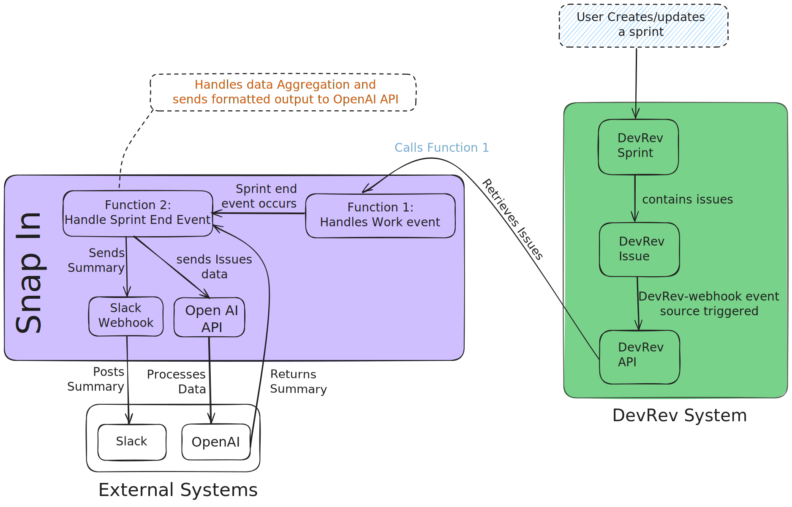

Prerequisites
- Obtain a Slack webhook URL to specify where sprint summaries should be posted.
- Access DevRev API to monitor and gather sprint data. Ensure you have necessary roles and permissions.
- A valid API key for OpenAI for creating the summarized content.
Setup Instructions
- Add the provided
manifest.yamlfile to your DevRev project. - Specify the Slack Webhook URL during setup:
webhook_url: "https://hooks.slack.com/services/YOUR/WEBHOOK/URL"
- Ensure event sources
devrev-webhookandscheduled-eventsare enabled. - Activate automations to schedule events and generate summaries.
Workflow
- Capture Sprint Data: Listens for `work_created` and `work_updated` events via the DevRev API for capturing relevant task data.
- Store Sprint Details: Maintain and update data pertaining to active sprints, including starting and ending times.
- Process End-of-Sprint Event:
- Fetches issues related to the sprint.
- Uses OpenAI to generate a structured overview which serves as a comprehensive post-mortem report.
- Slack Report Generation: Pushes the final sprint summary to the specified Slack channel working on user configurations.
Automation Handling
- Management Function: Continually update tracking details aligning with events from the `devrev-webhook`.
- Summary Function: Transforms and delivers a structured overview once a sprint cycles out.
Troubleshooting
- Ensure full compliance with Slack API permissions and URL configuration for post mapping.
- Any issues with OpenAI output reliability or speed should consider network latency and available query resources.
- Perform validity checks on DevRev API connections with correct read permissions ensured.